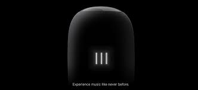
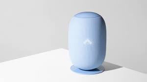

home speaker .Reinvented.
Whyd combines beauty, quality and simplicity
create an emotional music experience.
|
Whyd combines beauty, quality and simplicity to create an emotional music experience. You can play music by talking directly to the speaker. Say "Play my morning mix" or "Play Drake". You don't need your phone. I've heard the sound that comes out of it and it sounds realy good. so what makes this speaker sifferent ffrom the 458 other speakers out there? It starts with the design. The bold, pill-shaped design will stand out in your living room. |
The Whyd speaker connects over Wi-Fi or Bluetooth, works with
AirPlay and Spotify, Apple Music, SoundCloud, Tidal, Deezer and Google
Play Music.
Our elegant touch interface lets you control your music directly from the speaker. Tap on the glass touch panel to play a song, swipe to go next, zoom with two fingers to increase volume, and more. It's the most intuitive interface ever on a speaker. Control your music from anywhere in the room, without a phone. |
AestheticWe designed Whyd not only to be beautiful andpure, but to also have a touch of human presence. To do that, we elevated Whyd vertically and enclosed its powerful sound with an iconic three dimensionally knitted envelope that integrates harmoniously into everyone's home. |
High qualityWe've been doing our best work for the past two years tocreate a speaker that matches our standard of excellence. We've sourced among the best materials arond the planet to craft a high-quality object. Developed in Grand-Rapids, Michigan. Whyd's soft cloth is the result of years of U.S. knitting savoir-fare and craftmanship. it is perfectly allows sound to spread. it gives Whyd both a soft touch and beautiful look |

|
|

|
Simplicity
we created Whyd to enable you play music the most |